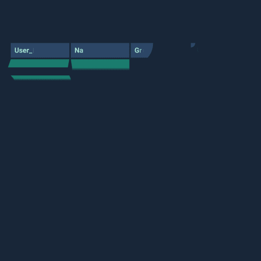
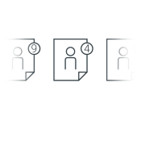
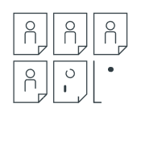
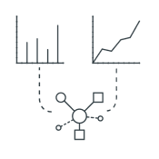

Innosol's innotwine is a robust, industry leading, people-data analytics plaform, empowering alumni fundraising professionals to:
Search & Filter
Instantly search and filter millions of alumni and non-alumni consituents according to any number of criteria; gone are the days of database joins. Now everthing is connected.
Analyze
Run industry leading ranking algorithms, realtime recommendation generation, and machine learning for on-the-fly brainstorming, on-the-go planning, and on-the-ground intelligence gathering.
Connect
Overlay deep-discovery social media data on existing alumni data, revealing influencers for targeted-marketing and powering an introduction finder to eliminate cold-calling forever.

Rows and Columns
This is how most of us were trained to look at data—row after row, column after column, day after day. But data doesn't really look like this, and neither do your alumni. We all know that people are so much more than columns of data.
Everything is Connected
Sitting in your data right now, just behind the veil of tables and spreadsheets are literally millions of explicit and implicit connections, each of which tells an important alumni story and provides valuable insights into their thoughts, patterns, passions, and hopes—the stuff fundraising is made of.
See Things As They Are
What if you could break out of rows and columns and begin visualizing, utilizing, and interacting with your alumni data in more natural and intuitive ways? What if you could see the patterns emerge right before your eyes? What if you could understand what is important to your alumni at a glance?
Now you can with Innosol's innotwine! And best of all the process is easy to set up and powerful enough to be game-changing right away! Here's the process:
Step 1:
Discover
We partner with you so that we can understand what data you know you have, help you discover data you didn't know you had, and strategize ways for you to get data you didn't even know you wanted.
Step 2:
Acquire
Next we store, organize, and structure your data on a secure cloud node-graph database platform, which is available organization-wide to anyone with the permissions to access it.
Step 3:
Overlay
Then we use proprietary and existing industry-standard data mining techniques to find and overlay constituent social media accounts and relationships on top of your data.

Step 4:
Score
Using the power of graph analytics, we score your alumni and non-alumni constituents, exposing—often for the first time—thousands of promising prospect candidates.

Step 5:
Report
Using constituent data, social media, and our unique scoring, we generate dozens of useful report templates that update live all the time to get your team moving quickly.

Step 6:
Visualize
Next we give you complete access to your data, social media connections, and scoring. You can navigate the graph, search and filter, analyze, and build connections.
Step 7:
Customize
Finally, we provide you with the tools you'll need to build your own queries and analytical tools. What you can do with your data and our platform is only limited by your imagination.
Ready to see the difference innotwine can make in your organization? Click below to contact an innotwine representative and to say hello to the platform that is revolutionizing the world of fund raising in higher education.
connect
Here's what our customers are saying about Innosol's innotwine.
“INNOSOL’s ability to identify invisible or overlooked connections between alumni by combining internal data with enriched social media connections in a cutting-edge database structure may easily become the 'next big thing' in our industry.”
Bill Green
Senior Vice President of Endowment Information Sciences,
Kansas University
"The innotwine product is a revolutionary advancement in the process of alumni prospect research and management. For the first time we can overlay social media data with data in our own system to identify leaders in peer groups and influencers in their networks. The ability to see all of this data at once has reduced hours of research while allowing previously unknown doors to be opened with potential donors and leaders within our network. We are using the tool to facilitate prospecting for major gift fundraising and boost alumni engagement through volunteer recruitment initiatives. The innotwine tool is making all of this and much more possible."
Jenne L. Vanderbout
Assistant Vice President for Alumni & Development, University of Central Missouri